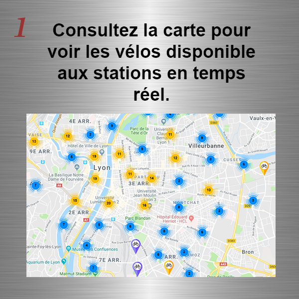
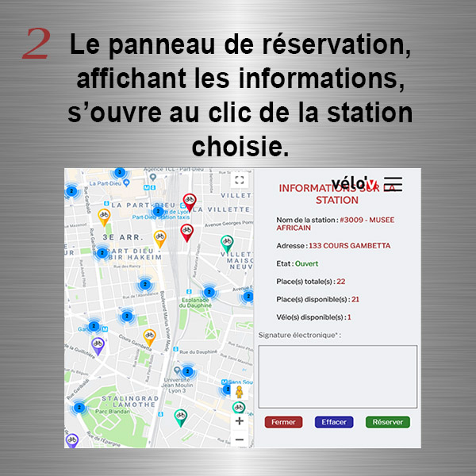
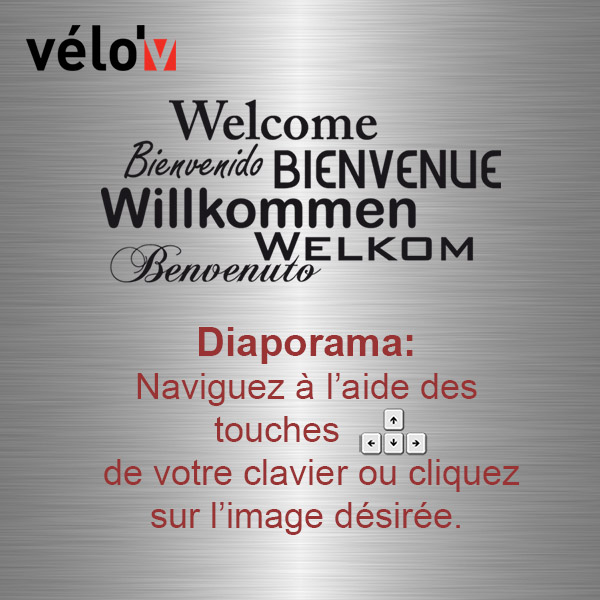
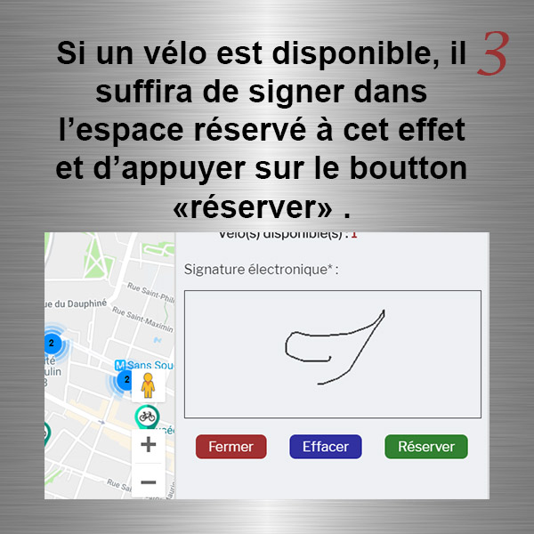
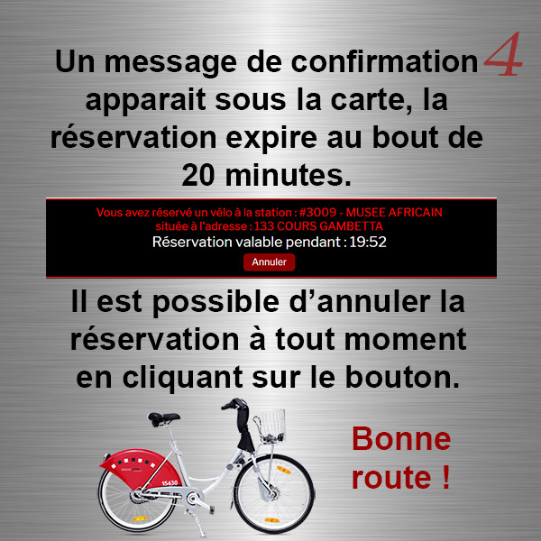

Vélo'v : Réservation de vélos en libre service sur Lyon
Bienvenue !
Louez et restituez votre vélo sur toutes les bornes de la ville.
Accessible 24h/24h 7jrs/7jrs avec ou sans abonnement,
avec Velo'V évadez vous l'esprit tranquille !





Carte de réservation des vélos
Légende des markers de la carte
Informations sur la station
- Nom de la station :
- Adresse :
- Etat :
- Place(s) totale(s) :
- Place(s) disponible(s) :
- Vélo(s) disponible(s) :